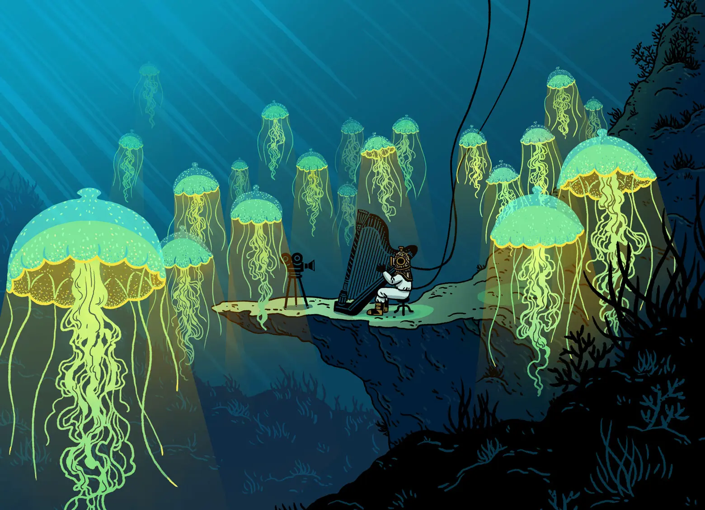

Illustration de Cécile Becq
La Boussole de la salle ovale
Application mobile pour la Bibliothèque Nationale de France
Mon rôle : Sound Design, Composition musicale
La boussole de la salle ovale est une application mobile qui invite les visiteurs de la BnF à découvrir les différents rayons de la salle ovale via une navigation interactive guidée.
Le sound design immerge l'utilisateur dans un décor sous-marin décliné en douze thématiques différentes correspondants aux rayons de la salle ovale (Paléographie, peinture, archéologie…).
L'identité sonore s'appuie sur les traits de crayon de Cécile Becq pour créer un univers cohérent et immersif.
 Illustration de Cécile Becq
La composition musicale se décompose en douze variations d'un thème principal, accompagnant l'utilisateur dans une navigation fluide entre les différentes thématiques.
Crédits
- Développé par
- Tamanoir Immersive Studio
- Design
- Alice Lepetit
- Illustrations
- Cécile Becq
- Sound Design & Composition Musicale
- Jean Le Bellego